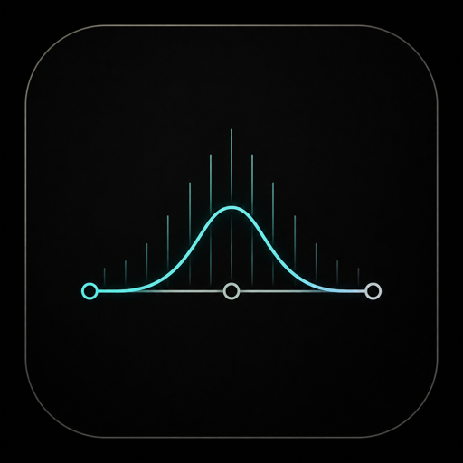

DRAG THE CURVE
Shape it by hand
Drop a node anywhere on the response and drag it — frequency and gain under the cursor, Q on the scroll wheel. The whole EQ is one interactive curve drawn straight over the spectrum.

A transparent mastering equaliser built around a draggable curve over a live spectrum. Up to twenty-four bands, eight filter types and slopes from a gentle 6 to a surgical 96 dB per octave — broad tone-shaping and tight problem-solving from one clean panel.
Stesso is a paid, closed-source SHLabs plugin in active development. Follow SHLabs for the release.
Drop a node anywhere on the response and drag it — frequency and gain under the cursor, Q on the scroll wheel. The whole EQ is one interactive curve drawn straight over the spectrum.
Up to twenty-four bands and eight filter shapes — bell, low and high shelf, high- and low-pass, notch and more — with slopes from a gentle 6 to a razor 96 dB per octave.
A real-time analyser shows the signal before and after the EQ behind the curve, so every move is informed — find the resonance, then place the band exactly on it.
Set any band to process the full stereo, just the left or right, or the mid or the sides — de-ess only the centre, brighten only the width, tame a channel imbalance.
A precise, independently verified filter core — the response you draw is the response you get, transparent enough for the master bus and sharp enough to fix a problem.
A clean, resizable interface with a readable grid, solo-listen per band to audition a move, gain matching and a preset browser for your own mastering chains.
Stesso is one half of the SHLabs mastering pair — the tone to its sibling Glue's dynamics. The same design ethos as the rest of the catalog (expressive, playable, math you can hear), pointed at the master bus. It runs as an insert on any track and shapes whatever passes through it.
A paid, closed-source plugin in active development. This page is an early look; pricing and availability will be announced when it ships. Follow SHLabs to hear when it lands.